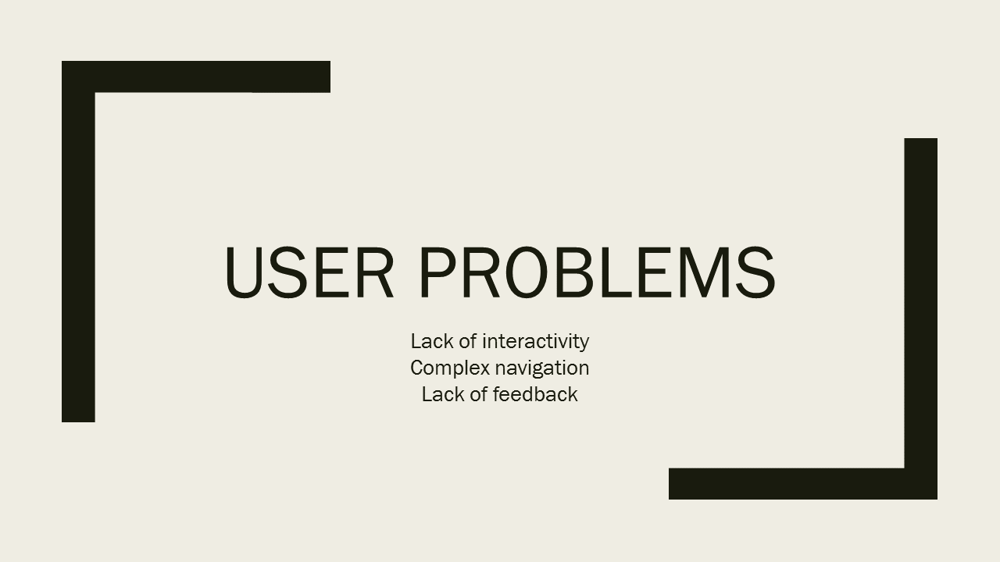

Audio RecipeBook
Created a mobile app prototype for a recipe app from a sound perspective.
Discover Phase
Scenario: Cooking is an important part of everyone's life. This includes accessing a recipe to cook and even having ingredient shopping list ready when the user is in the market.
Understanding the Business needs
The app needs to create a more accessible mobile application for visually impaired people.
Understanding the user
In order to create a recipe experience for visually impaired as well as normal users, I needed to come up with a common way of interaction. I performed initial research on app usage by studying the voice over feature in iPhones to understand how the visually impaired people use their phones and applications.
I also studied how they navigate and interact using various gestures. I went through blogs and YouTube videos of blind people cooking. This helped me analyze the challenges that people with visual impairment face.

Findings: A few of the findings included that they is a lack of conversational interfaces, better navigation and interactivity.
I also wanted to take into consideration the environment of usage. A recipe app can be used while cooking or it can be used to just read and understand the recipe. Hence, I concluded that a dual mode recipe app with hands-free mode and normal usage mode is required. The app will not have an audio output, but one can talk back to the application. The application is tab based so as to have easy navigation and semantic control over content.
Define Phase - Defining the problem
Created using thinking by analyzing user goals, business goals and environmentHow can we make a user experience for blind and sighted people to access a recipe on their phone or tablet from a sound and voice perspective?
User flow
Created using LucidChartsHow can we make a user experience for blind and sighted people to access a recipe on their phone or tablet from a sound and voice perspective?


Design Phase - Creating Wireframes
Created using LucidChartsInformation architecture considerations led me to design the app in the following main screens:
-
Home
-
Voice Commands
-
Choose Recipe
-
Preparation Time
-
Ingredients
-
Pre-cooking steps
-
Cooking steps
Navigation through the app is simple with a tab based layout. The app has the following tabs:
-
Home
-
Recipe
-
Shopping List
-
Profile
-
Help
Navigation between the recipe screens is supported by next and previous buttons. There is a back button on all screens supporting back action.
Design Phase - Creating Prototype
Created using Proto.ioI created a working prototype with audio.
- Client: Coursework
- Date: September 2016
- Service: User Experience Problem